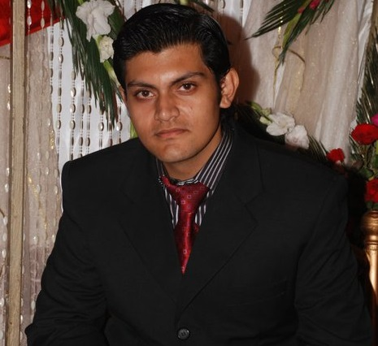

I was born in Dammam city of beautiful Saudia Arabia ("ana kalim Arabi shawiya shawiya"). I lived in Saudia Arabia for good 11 years. After this amazing life I moved to Lahore city of Pakistan to persue my Matriculation from English Grammar School .During this time of my life i got intreiged with computers and decideed to study Computer Science so I did my Intermediate Studies in Computer Science (I.C.S) from Punjab Group Of Colleges Lahore . During this phase of my life I learned that I am actually quite good in some computer games so I started to play Counter Strike and within a two years I was ranked in top players in whole Pakistan so I stoped studying and started to playing seriously to become the best player in Pakistan due to the respect and fame I was getting in Pakistan. I opened a Gaming Zone named "FATALITY" and was having success but suddenly the amount of loadsheding and costs became high and I lost everything so I decided to go back to education.
Coming back to the good part I got the admission in University Of Tuebingen and this was a dream come true. Now I am Studying Computation Linguistics. You might be wondering why computer linguistics so there are two reasons
1) Computer Science was in German.
2) Ever wonder which was the very first language spoken by the people.
Exactly, Here you go I hope now I am not making you think about start studying again or change ur field if you are almost done.
Currently I am studying about Finite State Transducers as my Thesis Implementing and improving
Looking back at my life the failure I suffered taught me study is the only thing which can help you in a long run and now I know what failiur feels like and never want to experience it again. Now I am almost done with my degree and hopefully will have a stable job now .
Damn it was a rollercoaster ride
